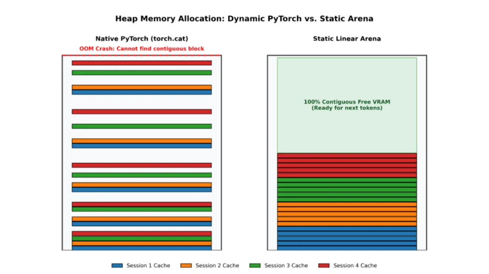

Static Linear Arena for PyTorch LLMs
Created a zero-allocation memory arena for local LLM inference in PyTorch. This memory interface replaces PyTorch's native dynamic memory allocation (torch.cat) with a Static Linear Arena which eliminates memory fragmentation and Out-Of-Memory (OOM) crashes during generation.

1. Memory Fragmentation in PyTorch
During token generation, a Large Language Model must cache the Key and Value (KV) vectors of prior tokens (in something called a KV cache!), this is how they compute attention in the transformer architecture. Natively, PyTorch appends these vectors dynamically via torch.cat. This results in the following:
- Allocation Overhead: The GPU must constantly request new, slightly larger blocks of memory in the GPU from the OS, copy the historical KV cache over, and delete the old block.
- Memory Fragmentation: This repeated reallocation results in "holes" in the memory that are just smaller than the size of a single token (meaning it is wasted memory). Eventually, PyTorch will request a contiguous block larger than any available free spot in memory, resulting in an Out-Of-Memory (OOM) crash despite the total free VRAM being sufficient.
2. The Static Linear Arena using bump pointers
Because LLM KV cache vectors have a fixed dimensional size based on the model architecture and context window, the dynamic allocation that Pytorch does is unnecessary. Additionally, for almost all models, the Key and value vectors are the same size, allowing us to use a single size bump pointer for all tokens.
Here is how the static arena uses the memory:
- Pre-Allocation: When the model initializes, a single contiguous VRAM block representing the absolute maximum context window is allocated upfront. Currently this is set by a user variable, but in the future this can be done dynamically so it will work immediately after providing it with a model.
- Zero-Allocation Slicing: During inference, a bump-pointer incremenets by exactly one token, and the new token is stored in the new spot that perfectly fits the singular token with no memory fragmentation.
This prevents the use of PyTorch's malloc, which prevents memory fragmentation and ensures that resource constrained models do not OOM when they are running on Pytorch.
Model Selection: Qwen2.5-1.5B-Instruct
The Static Arena was benchmarked using Qwen 2.5 1.5B. This model was selected because its 1.54 billion parameters (~3.08 GB in bfloat16) fits easily on standard 16GB T4 GPUs while possessing a 32,768 token context window (it uses about 3.5GB of memory when also counting its full KV cache). Furthermore, because the Key and Value vectors share identical dimensional size, the bump-pointer allocator prevents Python level branching and conditional overhead.
Here is a snippet of the code for how it works:
from transformers import AutoModelForCausalLM
from static_cache import StaticLinearKVCache
model = AutoModelForCausalLM.from_pretrained("Qwen/Qwen2.5-1.5B-Instruct")
# 1. Pre-allocate the contiguous memory runway
static_cache = StaticLinearKVCache(
config=model.config, # this stores the important information about the model, including number of layers, kv heads, head dimension. These number are used to figure out how much VRAM a token requires.
max_batch_size=1, # this is the number of different context windows that need to be allocated. If there are 4 people using the same thing at the same time, the max_batch size would be 4 (4 times the total space required for a single person so they all get their own memory block)
max_context_length=2048, # this is set by the user, which takes the required amount of memory required. For example, if the model had a context window of N, you would put N here and it would allocate enough space for exactly N tokens.
device=model.device, # the GPU
dtype=model.dtype # the data type precision that every number takes up in memory. The model used uses bfloat16, so it uses this figure to calculate how much memory is required.
)
# 2. Generate tokens with zero dynamic allocations
outputs = model.generate(
**inputs, # This is where the first prompt is provided
past_key_values=static_cache, # This tells the model to use the static_cache. By default, this uses the native Pytorch "torch.cat" memory allocation which leads to memory fragmentation
use_cache=True # Use the KV cache so it doesn't continuously use the transformer model to compute attention on all previous KV vectors for every single Q vector.
)3. PagedAttention vs. Contiguous Memory
Production environments in real servers (e.g. ChatGPT and other model providers) use PagedAttention to solve fragmentation. PagedAttention splits the KV cache into non-contiguous chunks allocated dynamically, allowing dozens of concurrent users to share a GPU without pre-allocating massive blocks per user. Essentially, instead of allocating the entire context window of the model at once, a small chunk is allocated every time it is required.
PagedAttention introduces pointer-chasing overhead to map these scattered memory blocks. For local inference or research prototyping (1-4 users), a Static Linear Arena would provide better performance. However, because the static linear arena is implemented to subclass Pytorch, I still have to deal with some of the Python overhead, which will slow it down considerably when compared to a completely C++/CUDA program for memory allocation.
4. Context and Intended Use
Originally, this was meant so I would have more experience in dealing with memory at a lower level so I would be able to create a zero-copy static arena allocator for my Compoxel project. However, there are legitimate uses for this program. This memory interface is designed to speed up output and improve memory utilization when prototyping LLM inference natively in PyTorch before moving to production.
Here are the environments that it is not meant for:
- Commercial Deployment (vLLM): For production servers that have to serve many users without using too much compute, the vLLM method is better. It allows them to not use as much memory per user, at the cost of slightly more latency per token.
- Home Deployment (Ollama): For standard local use, Ollama does something very similar, except it is implemented completely in C++, allowing it to be much faster than a program written in Python which also has to deal with Pytorch overhead.